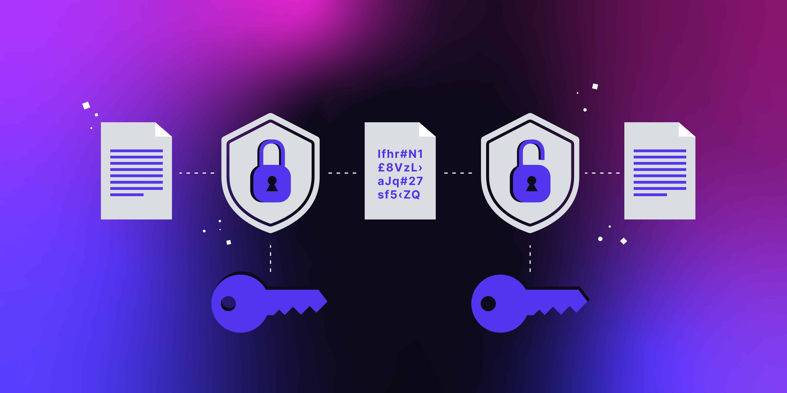
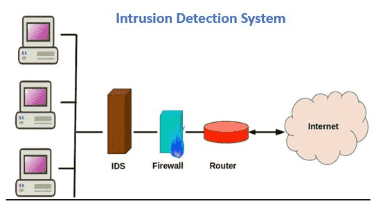

Network security threats are actions that attempt to gain unauthorized access, disrupt services, or steal sensitive information from a network. Below are some common defense methods used to protect systems and data.
Firewall
Firewalls monitor network traffic and block anything that doesn’t meet security rules. They act as a barrier between a trusted internal network and untrusted external networks, helping prevent unauthorized access.

Encryption
Encryption converts information into a secret code so that only authorized users can read it. It protects sensitive data like passwords, financial information, and emails from being stolen during transmission.
Antivirus
Antivirus software scans computers for malicious programs such as viruses or spyware. It can detect, block, and remove malware to prevent damage and keep systems safe.

Intrusion Detection
Intrusion detection systems monitor network activity for suspicious behavior, while intrusion prevention systems can automatically block attacks. Together, they help identify and stop potential threats before damage occurs.